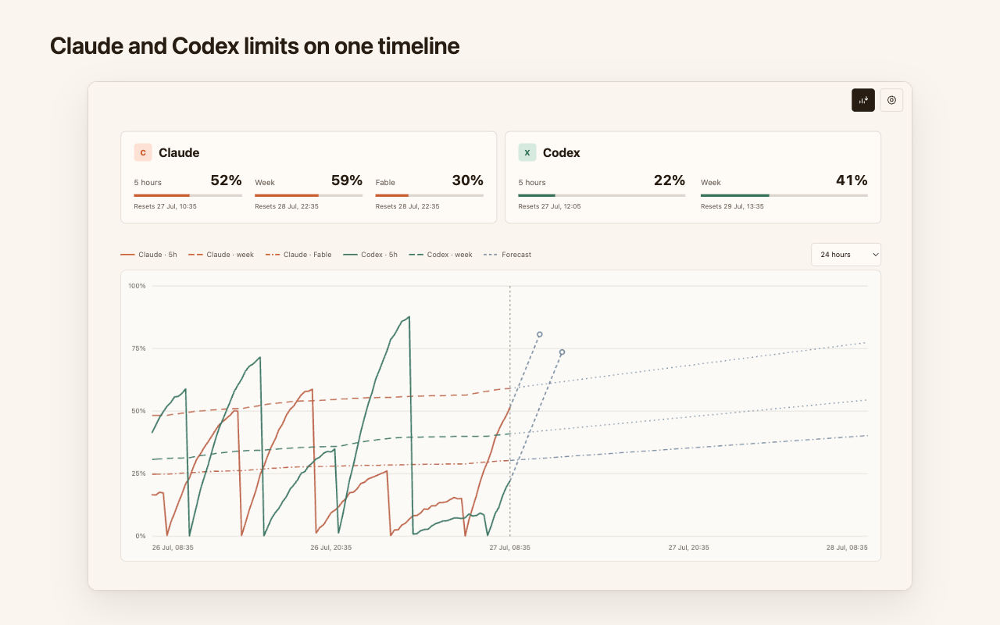

Claude and Codex limits on one timeline
A Chrome extension. Everything stays on your device.

What it does
- Samples your Claude and Codex usage-limit utilization every 5–60 minutes.
- Draws the 5-hour and weekly windows of both services on one shared chart.
- Projects a trend forecast: where each limit lands by the time it resets.
- Shows the number you care about on the toolbar badge.
- Keeps up to 90 days of history locally, exportable as CSV and erasable at any time.
Privacy
No server, no account, no analytics. The extension reads only usage percentages and reset timestamps, never your conversations or keys. See the privacy policy.
Source
The extension is open source: github.com/frkandris/claude-codex-usage-timeline-chrome-plugin.